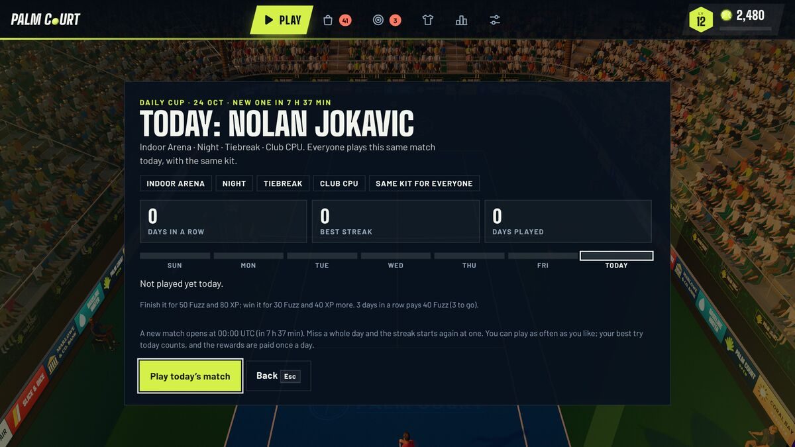

You find all of this under Play, World Tour: the entries there are the Season, the Daily Cup, the Weekly Cup and (in the Steam edition) the Career story. The Play page also shows a Next goal card that picks the closest reward from all of them, with an estimate such as “about one match”. All of it runs on your device, offline, against the CPU. Times are in UTC, so a new day starts at 00:00 UTC wherever you live.
What the Daily Cup is
One match per day, the same for every player (see Daily Cup in the glossary). The game works the setup out from the date alone, so every browser agrees without asking a server. A day’s setup is made of these pieces:
- The opponent: one of the five pros or the club player, dealt in shuffled rounds so you never meet the same one two days running.
- The court: one of five looks (the classic stadium on hard, clay or grass, the Beach Court, or the Indoor Arena). Beach and Indoor play as hard courts; see venues and times of day.
- The light: day, golden hour or night. The Indoor Arena is always lit.
- The length: a short set on most days and a quick tiebreak about one day in four.
- The CPU level: in every eight days, two are Rookie, five are Club and one is Pro. The Pro day is rare on purpose.
- The first serve: decided by the date, so it is the same for everyone.
- The twist: on five days in eight the match carries a match twist (Golden Point, Windy Day, Big Serve, Rally Bonus or Feather Balls), named in the screen's headline, and on the other three it is played by the standard rules. The wind of a Windy Day blows the same way for everyone. The twist you pick for a Quick Match never reaches the Daily Cup.
Everyone plays with the same kit. Your gear and the pro you normally play as are ignored for this match, so a player on day three of the game and a player with the best gear are on equal terms. The Daily Cup works with every way to swing.

How a Daily Cup match is scored
Every finished match gets a score, and the same formula is used by the Weekly Cup. A win is worth 250. Your share of the points in the match adds up to 450 more (win 60 percent of the points and you collect 60 percent of 450). Small bonuses follow: 10 for each ace (up to 8), 6 for each winner (up to 15) and 4 for each shot of your longest rally beyond the fifth (up to 15 of them). Each double fault costs 10 (up to 6). The total is then multiplied by the CPU level: 0.6 for Rookie, 1 for Club and 1.35 for Pro. The formula is capped at 1,500, but a flawless match against a Pro CPU comes to about 1,250, so there is room above any real score.
You can replay as often as you like. Your best try of the day is the one the game keeps and shows: a win beats any loss, and after that the higher score wins. Only the first finish and the first win each day are paid, however many tries you take.
What it pays, and what a streak is
| Event | XP | Fuzz |
|---|---|---|
| Finish today’s match (win or lose) | 80 | 50 |
| Win it (on top) | 40 | 30 |
| 3 days in a row (once, ever) | 0 | 40 |
| 7 days in a row | 0 | 100 |
| 14 days in a row | 0 | 150 |
| 30 days in a row | 0 | 300 |
| 60 days in a row | 0 | 500 |
The streak marks add up to 1,090 Fuzz in all, and each is paid once for the life of your save. The reward is small on purpose: it is Fuzz and XP only, so nobody who skips it is weaker in a match.
The streak is the number of days in a row that you finished the Daily Cup. It is the one thing in this whole system that can reset: miss a whole day and it starts again at one, and the screen says so before you play. Three details make it fairer than it sounds:
- Today’s unplayed match does not break the streak. It only ends when a full day has gone by with no match. The menu reminds you (“5-day streak: play today to keep it”) while it is still alive.
- The game keeps your streak as ranges of days, so two devices combine exactly: a day played on either one counts, and your longest streak is the better of the two.
- Setting your clock back can neither break a streak nor count a day twice.
After a match you can share the result: a 1200 by 630 picture drawn in your browser (date, opponent, score, streak) to save or hand to your phone’s share sheet, or a line of plain text such as “Palm Court Daily Cup 16 Oct: won 6-4 vs Jokavic, 3-day streak.” Nothing is uploaded. The Daily Cup has no public leaderboard; your result and streak stay on your device.
The Weekly Cup
The Weekly Cup is the same idea over a week. A new themed setup opens every Monday at 00:00 UTC. There are twelve themes (Baseline Grind, Big Server, Night Wall, Touch and Go, All-Court Classic, Sudden Tiebreak, Red Dirt Tiebreak, Lawn Rush, Golden Hour Hard, Clay Wall, Grass Tiebreak and Club Duel), and the same one never comes up two weeks running. Everyone plays with the neutral kit, and your CPU level is part of the score, so a Pro-level 600 outranks a Rookie-level 600.
Each tier pays once a week, and the best score of the week counts, so you can retry freely:
| Tier | Score needed | Pays |
|---|---|---|
| Bronze | 250 | 120 XP and 80 Fuzz |
| Silver | 500 | 200 XP and 120 Fuzz |
| Gold | 700 | 300 XP, 200 Fuzz and the title Cup Gold |
With online backup on, the Leaderboard tab also has a Weekly Cup board for “this week” and “last week”. You can send a friend a challenge link or code that carries a setup and your score; they play the same setup and see “you versus them”. The ball physics are not seeded, so it is a score to beat, not a replay of the same rally.
Weekly goals, court days and seasons
- Weekly goals. Three a week, from a pool of thirteen: playing the Weekly Cup is always one of them, and two more are drawn from goals such as “Win 6 matches”, “Serve 15 aces”, “Play a 16-shot rally” or “Hit 80 shots on time”. Goals tied to a level you have not reached (a clay, grass or night match, a full set, beating a Pro CPU) are left out until you get there. They pay 300 to 600 XP and 200 to 380 Fuzz each, and you have the whole week.
- Court days. A court day is any day you finish a match, a drill or an arcade round. The total only ever goes up. Playing on 2, 4 and 6 different days in a week pays 60, 120 and 200 XP (with 40, 80 and 140 Fuzz). Lifetime milestones at 3, 7, 14, 30, 60, 100, 200 and 365 days pay Fuzz, and 60 and 200 days also grant a title. A “run” forgives up to two days off, and coming back after two weeks pays 100 Fuzz as a welcome back. Nothing here resets to zero.
- Daily challenges. Separate from the Daily Cup: three a day from a pool of seventeen, with a free reroll of one. See levels, Fuzz and the Store.
- Seasons. A season is a calendar month with its own theme (May is Clay Month, June is Lawn Month). Season Points from matches (2 each, at most 10 a day), challenges and goals fill a six-step track; the 220-point step grants the season title and the 600-point step a season racket paint. Every season returns the next year, so a missed one comes back.
The numbers for every source of XP and Fuzz, and how long a level takes, are in the economy guide.
Getting the most from it
- Look at the setup before you press play. A Pro CPU on grass at night is not the same task as a Rookie on clay by day; the pro play-style guide and the pros guide help you plan for the day’s opponent.
- Play the Daily Cup early in a session. It is an ordinary match underneath, so it also pays the normal match rewards, the first-win-of-the-day bonus and progress on your daily challenges.
- Do not chase score at the cost of the win: the 250 for a win is the biggest single piece.